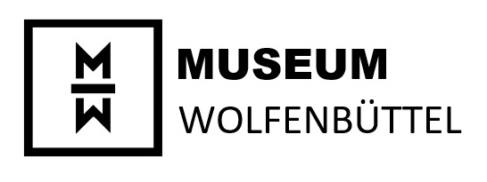

After the advanced deterioration of the existing building stock became increasingly evident, the historical Old Town, including Auguststadt and Juliusstadt, was declared an urban renewal area in 1978. Since then more than 200 private houses within its 52.5 hectares have been completely restored. In addition, in 1981, what was called the Old Town statute was adopted, in order to preserve Wolfenbüttel's distinctive townscape. After the EU subsidies totalling 55.2 million euros ran out, the Old Town renewal project came to an end in 2014.
